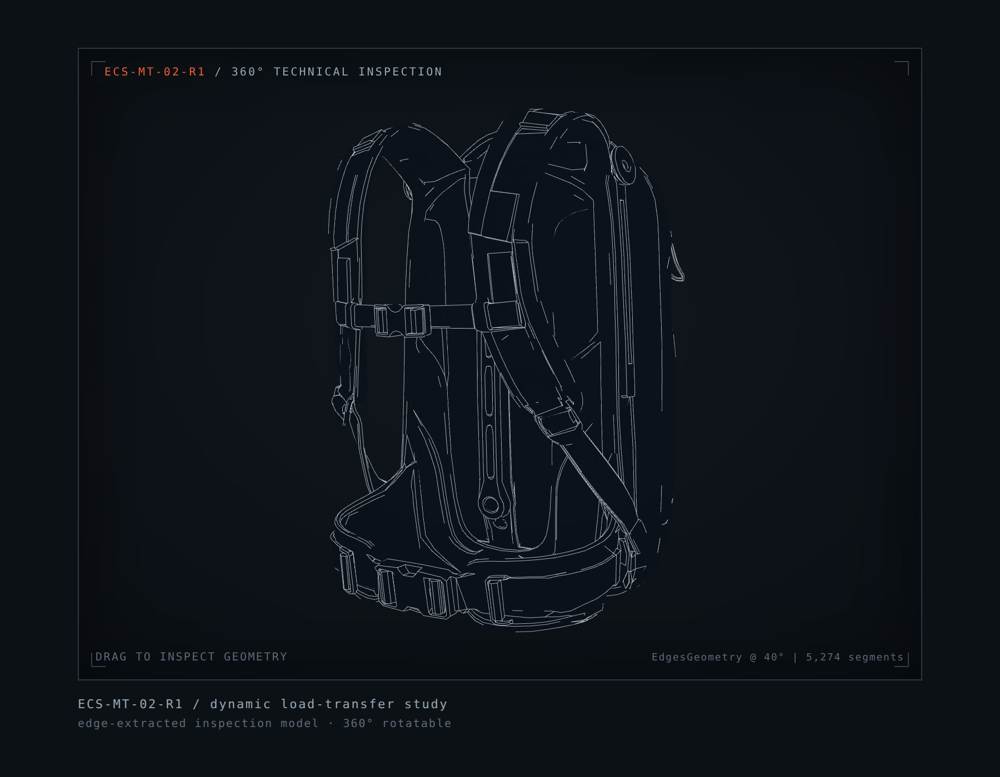

A technical archive of products, tools, and systems developed through evidence, prototypes, material decisions, and operational constraints.

ECS-MT-02-R1 / dynamic load-transfer study
edge-extracted inspection model · 360° rotatable
Available for systems design, industrial / product work, and portfolio collaborations. Reach the studio directly.